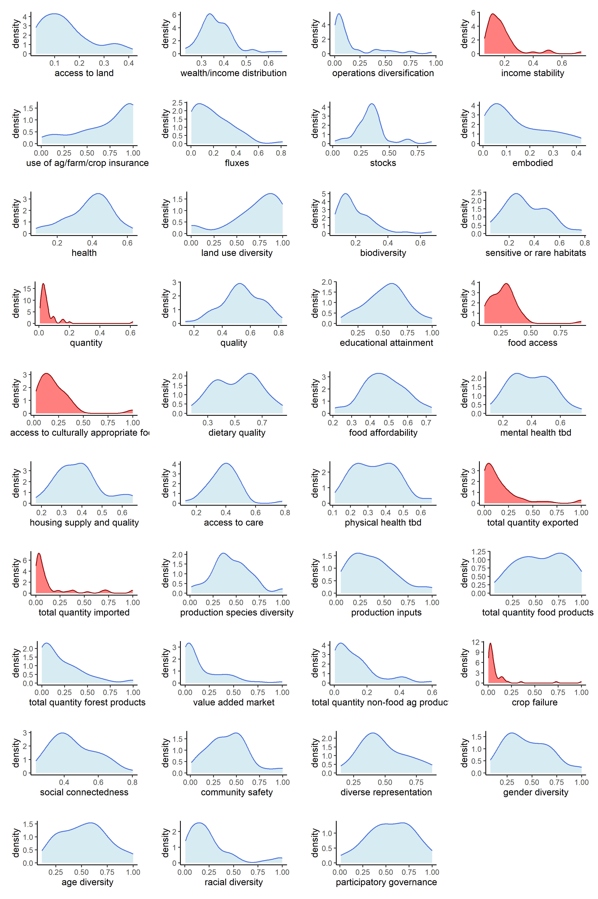

Sustainability Metrics Secondary Data
Chris Donovan
Food Systems Research Center
Introduction
- Goals of secondary data work
- explore methods of aggregation
- highlight existing data and important gaps
- Goals for today
- share preliminary findings
- feedback from content experts
- how well do data represesent the system
- normalization, aggregation, values
- where and how to incorporate qualitative data
- how to guide next RFP
Secondary Data
Framework
- graphs with framework, one tab for each dimension
Framework 2
- Table with metadata, desired direction
- Touch on distance from targets? This is a hinky point here
Secondary Data - Refined
A set of 129 metrics to match the refined framework
Normalization
Rank Order
Winsorization
Min Max (OECD 2008)
\[\begin{equation} I^t_qc = \frac{x^t_qc - min_c(x^{t_0}_q)}{max_c(x^{t_0}_q)-min_c(x^{t_0}_q)} \end{equation}\]
Where \(x^t_qc\) is the metric \(q\) for state \(c\) at time \(t\).
Z-Scores (OECD 2008)
\[\begin{equation} I^t_{qc} = \frac{x^t_{qc}-x^t_{qc=\overline{c}}}{\sigma^t_{qc=\overline{c}}} \end{equation}\]
Box Cox (Bickel and Doksum 1981)
\[\begin{equation} {\rm For}\ \lambda\neq0,\ f\lambda(x) = (sign(x)|x|^\lambda-1)/\lambda \end{equation}\] \[\begin{equation} {\rm For}\ \lambda = 0,\ f_0(x) = log(x) \end{equation}\]
Indicator Distributions
An example of indicator distributions with the Min Max + geometric means methods

Indicator Correlations
Min Max geometric aggregation
Comparisons
- spiderplots of each aggregation
Validation
- Regressions
Feeding America, Map the Meal Gap
Validation 2
- PCA with all indicators
Sensitivity by Dimension
- 400 combinations of uncertain inputs
- Higher ranks are desirable
- Some dimensions are stable (Health)
- Some are quite unstable (Economics)


Indicator Influence
- Some points before plot
- another point before the plot
- some other important point
References
Bickel, Peter J., and Kjell A. Doksum. 1981. “An Analysis of Transformations Revisited.” Journal of the American Statistical Association 76 (374): 296–311. https://doi.org/10.1080/01621459.1981.10477649.
OECD. 2008. Handbook on Constructing Composite Indicators: Methodology and User Guide. Paris: Organisation for Economic Co-operation and Development.